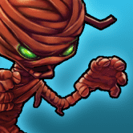
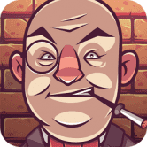
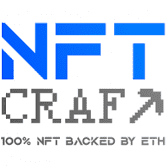
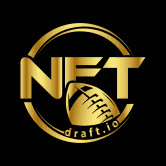
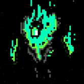
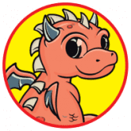
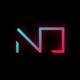

Tezotopia Tezotopia 是一款 NFT 游戏，允许玩家从称为 Tezotops 的 Yield Farming NFT 中获得收益，或者与其他玩家进行战斗，以赢得装有各种奖品的战利品箱，例如 Unobtanium、Rare
Tharos Networks 我们是 Tharos Networks：独一无二的多元宇宙 Tharos Networks 是一个基于 BSC 区块链的多元宇宙，可让您以前所未有的方式沉浸在游戏世界中。 视频游戏行业是一个价值
The Adventurer's Guild 目前处于开发阶段的冒险家公会是一款基于 NFT 的角色扮演游戏。您可以创建一个角色，为他们装备上装备，并开始从地牢爬行到与强大的 Boss 战斗的各种任务，所
The Crypto Prophecies Crypto Prophecies 是一款去中心化的点对点价格预测游戏，拥有可爱的可收藏角色，称为 Crypto Prophets，他们可以使用魔法物品在战斗中获得胜过对手的优势。 下注并
The Damned Pirates Society 该死的海盗协会 NFT 允许您获得藏宝图。 这些将在我们的游戏化合同中用于航行，赚取宝箱作为奖励，并使用它们来升级您的旗舰，建造您的阿拉马达等等！ 每个
The Dynasty THE DYNASTY 项目：多产品生态系统，将为投资者带来丰厚的利润和机会，是 THE DYNASTY 与其他项目的最大区别。 一款逼真的 PLAY_TO_EARN 游戏，拥有精美的 NFT 收藏、公平竞争机制、透明
The Fabled The Fabled 是一款基于区块链的开放世界 RPG，让玩家可以探索和体验 The Fabled 的世界。玩家可以从各种世界中进行选择，在一系列关卡中探索和战斗，他们将遇到各种
The Garlies 您是否曾梦想找到圣杯或发现神秘的亚特兰蒂斯城？ 好吧，在 The Garlies 中，您可以同时做更多的事情！ Garlies 是在臭名昭著的发现时代的角色扮演游戏。 Garlies 必须完成任务
The Tap Platform Tap 平台允许游戏玩家将您的游戏内货币从一个游戏转移到另一个游戏！ 使用 Tap 平台将游戏内货币和分数转换为 Tapcoins ($TTT)。 Tap Platform SDK 专为 Unity 和 Unreal 引擎构建，允
The Wasted Lands 什么是荒芜之地？ The Wasted Lands 是一款开创性的科幻游戏，将多个令人兴奋的游戏元素融入到后世界末日元节 The Wasted-verse 中的角色扮演游戏中。凭借围绕其 Metaverse 生态系统的独特
THE WOLF CLUB 我们是由 200 多种不同特征组成的 2881 只智能且独特的 3D 狼群，在以太坊区块链上令人不寒而栗。 我们是 Alpha 版和俱乐部的先驱。 通过成为会员，您将获得私人俱乐部
Thetan Arena Thetan Arena 的游戏玩法旨在结合您的个人技能和团队合作。 用各种游戏模式挑战自己：从经典的 MOBA 塔冲到大逃杀，每月更新和有吸引力的奖励。 此外，Thetan A
Tiny World Tiny World 是一个基于全球历史传说的多元化交易游戏世界。 它将 Play-to-earn 和有效的 DAO 治理与高质量的游戏玩法相结合。 Tiny World 拥有完整的产品矩阵，包括： Tiny 游戏（Tiny
Triton Station 什么是海卫一站？对 TRTN 代币的需求是一项好的投资吗？ Triton Station 是一个使用 Solana 区块链技术进行社交互动的平台。 Triton Station 是由对新网络技术着迷的充满激情和忠诚的团队
TRON Birds 探索 TRON，成为鸟类的赞助人！ 10 只鸟是 0.017329 TRON。 因此，您已将 10 Birds 转换为 0.017329 TRON。我们使用 577.075499 国际货币汇率。我们为我们的计算器添加了最受欢
Unlinked UNLINKED 是一款在 Wax 上开发并以 22 世纪后期的未来太阳系为背景的赚取 RPG 多人纸牌游戏。 游戏的发展分为2个不同的叙事部分： 第 1 阶段（现已推出！） 打好你的牌，
NFT Battle Miners NFT Battle Miners 是一款基于 WAX 区块链的 P2E（玩赚）游戏，您需要 NFT 才能玩。目前可用的是采矿/质押，PVP 测试版将于 12 月推出！您可以挖掘construct
 NFT Boss Battles 从独特的代币和低成本中获利 NFT Boss Battles 中的每个英雄都是独一无二的，并作为不可替代的、基于以太坊的 ERC-721 代币实现，玩家可以自由交易。该游戏是运行在币安智
NFT Brawl BSC NFT Brawl 是 Seascape Network 最新推出的 DeFi 游戏。在其中，用户可以花费 Crowns (pCWS) 来获得 Seascape 的原始 NFT，Scapes。获得各种品质的花葶，每铸造五次就获得一次暴击！感受 NFT
 NFT Brawl ETH NFT Brawl 是 Seascape Network 最新推出的 DeFi 游戏。在其中，用户可以花费 Crowns (CWS) 来获得 Seascape 的原始 NFT，Scapes。获得各种品质的花葶，每铸造五次就获得一次暴击！感受 NFT
 NFT Craft NFTcraft 是一款在 Polygon 区块链上赚取游戏元宇宙的游戏。这里的所有 NFT 对象都 100% 由 Etherem 支持。开启了任务模式和比赛，奖品是奖杯 NFT 或一笔不错的 USDT。Androi
 NFTdraft.io NFTdraft.io 是一种奇幻运动，包含可收藏的交易卡 (NFT)。我们的主要锦标赛是免费参加的。在我们半封闭的 2021 年测试季期间，我们奖励了超过 110,000 美元。 我们将 25% 的
MythArt MythArt 是一家位于中国的 NFT 工作室。我们旨在降低用户获取 NFT 资产的准入门槛，并为他们提供他们的第一个 NFT 资产。用户可以每 24 小时免费领取一次 NFT。Myt
 Mythic Creeps Creeps 是币安智能链上的一款 NFT 对战游戏。您可以铸造、战斗和收集独特的 NFT。您可以在 BNB 中下注。如果你赢了，你的 BNB 会翻倍，如果你输了，BNB 将进入奖
 NEFTiLAND NEFTiLAND 是一款受 Pet Tamer 启发的 NFT 游戏， 是基于区块链的多人龙赛，在 BSC 上构建和运行，任何人都可以通过智力游戏和生态系统进行游戏并赚取代币。目前在网络上运行
 Neon District Neon District 是一款免费的赛博朋克角色扮演游戏，以 Matic 和 Ethereum 上的可收藏 NFT 为特色。玩家收集角色和装备，打造并升级装备齐全的团队，并通过 Neon Pizza 竞争性多人任务或实
Goblin Wars 向大酋长致敬！ 欢迎来到地精战争！ #BSC 区块链上的#play2earn #NftGaming 游戏！ Goblin Wars 是一款策略、任务导向的游戏，具有生动的经济，灵感来自老式 RPG 和游戏
Gods and Legends GNL 是一个成功的 NFT 集合，在多个区块链上得到验证。 WAX 区块链上的顶级多功能集合之一，共有 9 万多个社交媒体关注者。 在短短 9 个月内，它已售出超过 10 万本
Gods Unchained Gods Unchained 是区块链上的 AAA 级游戏，由 Coinbase 等投资者提供支持。 第一季独家卡牌销售现已上线 - 立即拆箱。荣幸和你们见面;我是 Fletch，Gods Unchained 的电子竞技
Gooeys Gooeys 是 Dogira Studios 团队的一款 Play-To-Earn 游戏，具有完全代币化的经济——从游戏中的角色到任务奖励的所有内容都完全在链上，并且可以在 OpenSea 等流行平台上进行交易。 Gooeys 由 Chainlink VRF
Inugami World Inugami World 是一款开放世界概念、免费玩、玩即赚 NFT 游戏，允许玩家竞争 $GAMI 奖励和 XP 积分。角色基于众所周知的模因和电影角色，使其成为同类游戏中的第一款游戏。
IOI-game 将有限的汽车作为 NFT 进行质押 - 玩家对玩家的游戏 - 10,000 TRX 保证奖池 - 即时奖励的冒险和锦标赛 - IOI 代币持有者的奖励池 - 为交易者和投资者提供的强大 NITRO 钱包 -


 来获得 Seascape 的原始 NFT，Scapes。获得各种品质的花葶，每铸造五次就获得一次暴击！感受 NFT 和 DeFi 的真正威力！")